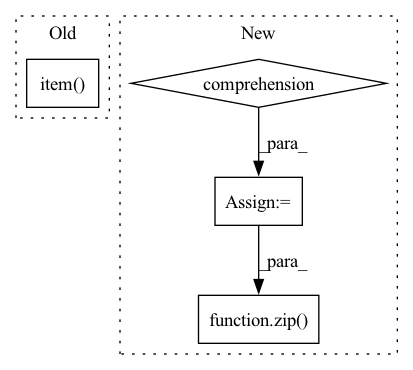

Pattern ID :18770
Before Change
logit = self.affine(hid.squeeze(1))
posterior = F.softmax(logit, dim=1)
wav = torch.multinomial(posterior, 1).squeeze(1)
wavs[:, i] = 2 * wav.item() / (self.quant_dim - 1.0) - 1.0
mu = self.quant_dim - 1
wavs = torch.sign(wavs) / mu * ((1 + mu) ** torch.abs(wavs) - 1)After Change
device = mels[0].device
mel_lens = [len(mel) for mel in mels]
wav_lens = [mel_len * self.hop_len for mel_len in mel_lens]
max_mel_len = max(mel_lens)
mel_embs = []
for mel in mels:
mel = mel.unsqueeze(0)
mel_emb, _ = self.mel_rnn(mel)
mel_emb = mel_emb.squeeze(0)
mel_embs.append(mel_emb)
mel_embs = pad_sequence(
mel_embs, batch_first=True, padding_value=float(self.quant_dim // 2)
)
mel_embs = mel_embs.transpose(1, 2)
conditions = F.interpolate(mel_embs, scale_factor=float(self.hop_len))
conditions = conditions.transpose(1, 2)
hid = torch.zeros(1, batch_size, self.wav_rnn_dim, device=device)
wav = torch.full(
(batch_size,), self.quant_dim // 2, dtype=torch.long, device=device,
)
wavs = torch.empty(
batch_size, max_mel_len * self.hop_len, dtype=torch.long, device=device,
)
for i, condition in enumerate(torch.unbind(conditions, dim=1)):
wav_emb = self.embedding(wav)
_, hid = self.wav_rnn(
torch.cat((wav_emb, condition), dim=1).unsqueeze(1), hid
)
logit = self.affine(hid.squeeze(0))
posterior = F.softmax(logit, dim=1)
wav = torch.multinomial(posterior, 1).squeeze(1)
wavs[:, i] = 2 * wav / (self.quant_dim - 1.0) - 1.0
mu = self.quant_dim - 1
wavs = torch.true_divide(torch.sign(wavs), mu) * (
(1 + mu) ** torch.abs(wavs) - 1
)
wavs = [
wav[:length] for wav, length in zip( torch.unbind(wavs, dim=0), wav_lens)
]
return wavs
In pattern: SUPERPATTERN
Frequency: 3
Non-data size: 4
Instances Fragment ID: 61070723
Project Name: yistlin/universal-vocoder
Commit Name: a2f043170a0335459db6b45b7d8dc692db9a00f5
Time: 2020-10-06
Author: yishen992@gmail.com
File Name: models/universal_vocoder.py
M Class Name: UniversalVocoder
N Class Name: UniversalVocoder
M Method Name: generate(2)
N Method Name: generate(2)
M Parent Class: nn.Module
N Parent Class: nn.Module
M File Name: models/universal_vocoder.py
N File Name: models/universal_vocoder.py
M Start Line: 58
M End Line: 88
N Start Line: 63
N End Line: 120
Before Change
return tuple(total_losses)
else:
return sum(losses_list).item()
def _valid_epoch(self, valid_data):
valid_result = self.evaluate(valid_data, load_best_model=False)
valid_score = calculate_valid_score(valid_result, self.valid_metric)After Change
losses = self.model.calculate_loss(interaction)
if isinstance(losses, tuple):
loss = sum(losses)
loss_tuple = tuple(per_loss.item() for per_loss in losses)
total_loss = loss_tuple if total_loss is None else tuple(map(sum, zip( total_loss, loss_tuple) ))
else:
loss = losses
total_loss = losses.item() if total_loss is None else total_loss + losses.item() Fragment ID: 61070737
Project Name: rucaibox/recbole
Commit Name: f8d87147f7a971901bd6d4d19ddf07af34f76db5
Time: 2020-09-30
Author: 2015201909@ruc.edu.cn
File Name: recbox/trainer/trainer.py
M Class Name: Trainer
N Class Name: Trainer
M Method Name: _train_epoch(3)
N Method Name: _train_epoch(3)
M Parent Class: AbstractTrainer
N Parent Class: AbstractTrainer
M File Name: recbox/trainer/trainer.py
N File Name: recbox/trainer/trainer.py
M Start Line: 90
M End Line: 109
N Start Line: 91
N End Line: 106
Before Change
return tuple(total_losses)
else:
return sum(losses_list).item()
class KGATTrainer(KGTrainer):
def __init__(self, config, model):After Change
losses = self.model.calculate_kg_loss(interaction)
if isinstance(losses, tuple):
loss = sum(losses)
loss_tuple = tuple(per_loss.item() for per_loss in losses)
total_loss = loss_tuple if total_loss is None else tuple(map(sum, zip( total_loss, loss_tuple) ))
else:
loss = losses
total_loss = losses.item() if total_loss is None else total_loss + losses.item() Fragment ID: 61070736
Project Name: rucaibox/recbole
Commit Name: f8d87147f7a971901bd6d4d19ddf07af34f76db5
Time: 2020-09-30
Author: 2015201909@ruc.edu.cn
File Name: recbox/trainer/trainer.py
M Class Name: KGTrainer
N Class Name: KGTrainer
M Method Name: _train_epoch(3)
N Method Name: _train_epoch(3)
M Parent Class: Trainer
N Parent Class: Trainer
M File Name: recbox/trainer/trainer.py
N File Name: recbox/trainer/trainer.py
M Start Line: 328
M End Line: 366
N Start Line: 327
N End Line: 366